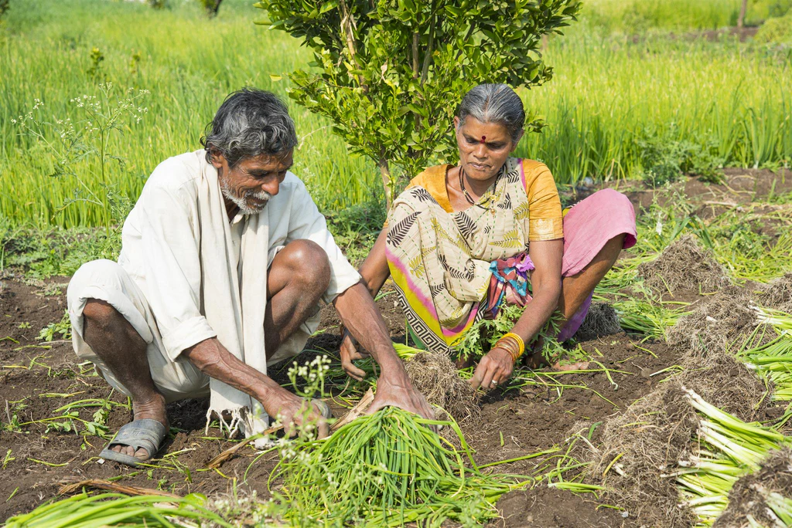
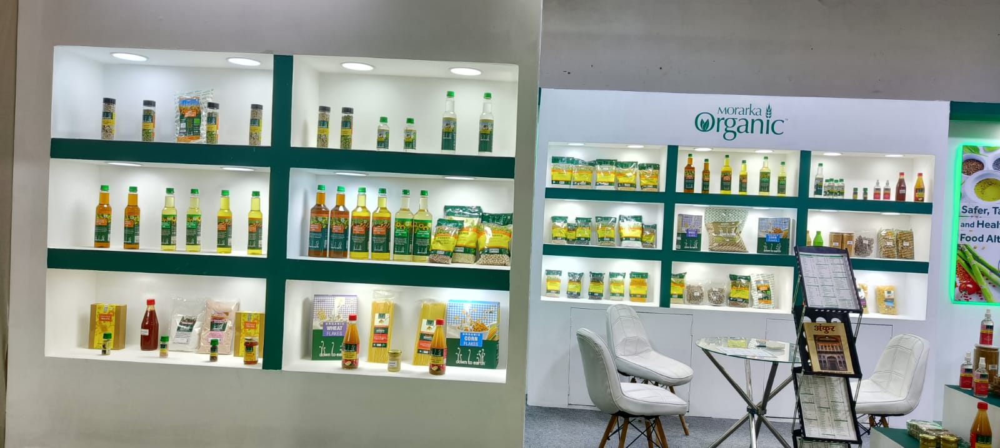
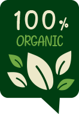

Certified Organic
Fair Trade


Certified Organic

Food as a business, being a direct relationship between the producers and consumers for thousands of years, underwent major transformation during the industrial revolution. It become indirect, there were many multiple levels and above all the value chain management of agriculture crops became so complex that it was not possible any more for producer to directly reach out to consumers. While this offered many benefits to the consumers in terms of regular availability, better products, more variety and convenience, it also brought about distortion
in the trade, the major issue being lesser share for the producer as compared to everyone else in the food value chain
As of today the very idea of organic has been based on overcoming all the shortcomings in the food value chain, beginning with the contamination in food, that too right from cultivation onwards. It becomes imperative that the producer is involved in meeting the increasing expectations of organic consumers. Thus when an organic crop is cultivated and is being brought to the table of value, to the quality conscious

Ethical sourcing practices that ensure fairness across the value chain.
Fair wages, safe working conditions and equal opportunities.
Environmentally responsible farming and harvesting methods.
Open accountability to consumers and trade partners.
Organic consumer it must also offer value for money and must meet the reasonable expectations of producer, consumers & trade channel players. While for conventional food products it is being attempted through a novel concept like Fair Trade Labelling and Certification, in case of organic it is achieved as a basic principle of organic certification.
At Morarka Organic, all the operations are in compliance with fair trade standards for international certification. The initiatives are in the pipeline to get complete value chain certified as well. Collaborations are being established to evolve India specific Standards and Certification under the patronage of Government Agencies.
Not all trade is fair. The farmers at the beginning of the chain don’t always get a fair share of the benefits of trade. Fairtrade enables consumers to put this right.


Fairtrade is an alternative approach to conventional trade and is based on a partnership between producers and consumers. Fairtrade offers farmers a better deal and improved terms of trade. This allows them the opportunity to improve their lives and plan for their future.
The Fair Trade label offers a positive way to buy products in solidarity with those who produced them. Buying Fairtrade products helps empower farmers and helps them tackle poverty.
Fair Trade certification is not just about paying farmers and workers fairly. Producers are expected to trade responsibly and respect and improve the lives of those who work with them, the communities in which they work and the environment.
Although Morarka Organic products do not carry the Fairtrade Mark, it complies with and meets every aspect of Fairtrade standards. These standards are designed to address the imbalance of power in trading and the injustices of conventional trade.
The core purpose of these standards is to alleviate poverty of the producers and sustainable development. Like every Fair Trade certified company, Morarka Organic guarantees that their suppliers do not use child or slave labor, that workers are paid a fair living wage, that employment opportunities are available to all workers and that everyone has an equal opportunity for advancement, and that healthy working and living conditions are provided for workers.
In addition Morarka Organic supports the educational and technical needs of their workforce, while promoting active and healthy trade agreements and is open to public accountability. Morarka Organic also complies with Fair Trade standards involving environmentally sustainable production and harvest practices, encouraging a stable market and a healthy Earth.
The extraordinary growth achieved in a short span and increasing number of farmers being enrolled every month is an indication of responsible business behaviour by Morarka Organic.